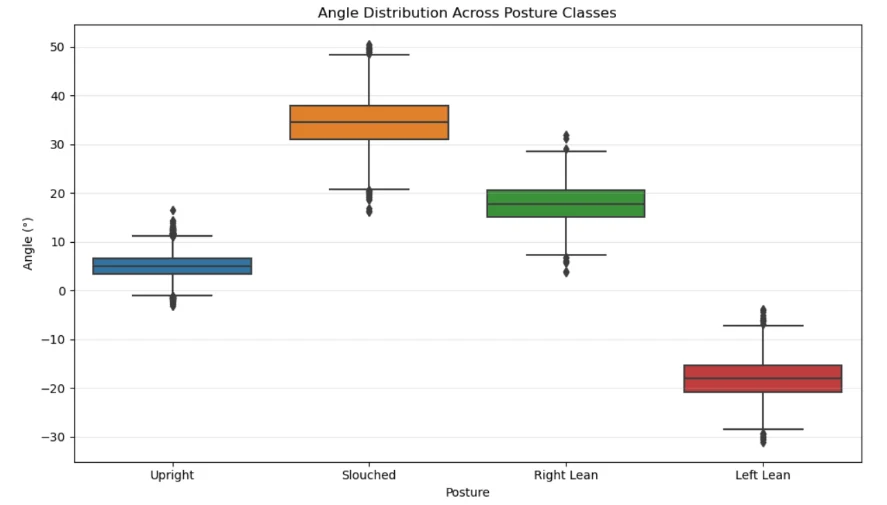
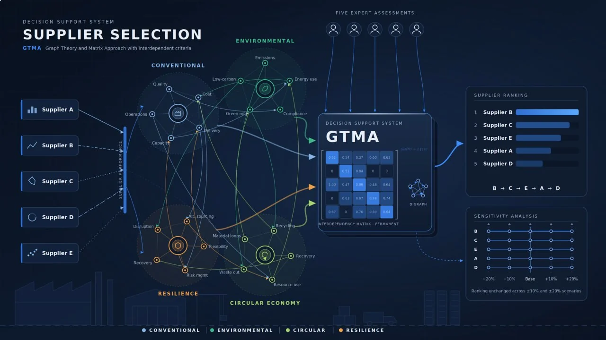
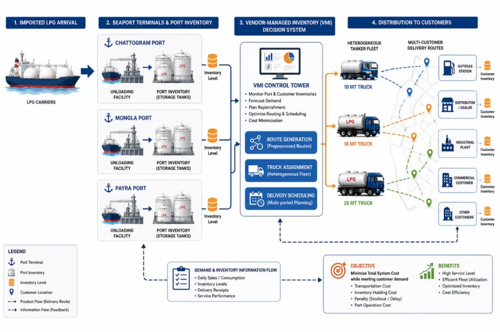

Shah Md Tasrifur Rahim
Industrial Engineering · Supply Chain Optimization · Decision Support · Human Factors
About
I am a graduate in Industrial & Production Engineering from Rajshahi University of Engineering & Technology (RUET), Bangladesh, with a CGPA of 3.60/4.00 and academic scholarships for three consecutive years.
My research focuses on developing optimization and decision-support frameworks for complex supply chain and industrial problems. My current work includes a Decision Support System for sustainable and resilient supplier selection and a mathematical optimization model for LPG distribution in Bangladesh. Earlier projects include a sensor-based posture detection system for ergonomic health, which received a Best Track Paper Certificate at the 8th IEOM Bangladesh International Conference, and an innovative wheelchair-bed design for patient care.
My undergraduate thesis, supervised by Sonia Akhter, is titled “A Port-Inventory Routing Problem with Route Preprocessing: Application to LPG Distribution in Bangladesh.” The thesis focuses on developing a mathematical optimization framework for efficient LPG distribution and routing decisions.
I currently work in the Air Freight Department at DHL Global Forwarding (Bangladesh) Ltd., gaining hands-on experience in international logistics. I have also completed industrial training at British American Tobacco Bangladesh (BATB) and served as a SPARKS Campus Ambassador at Unilever Bangladesh.
Research • Industry
News
- Joined DHL Global Forwarding (Bangladesh) Ltd. as an intern in the Air Freight Department.
- First citation: the posture detection paper was cited in Progresif: Jurnal Ilmiah Komputer.
- Completed B.Sc. in Industrial & Production Engineering, RUET.
- Paper received Best Track Paper in the Human Factors, Ergonomics and Healthcare System Management track at the 8th IEOM Bangladesh International Conference.
- First-author paper published in the Proceedings of the 8th IEOM Bangladesh International Conference: “A Sensor-Based Posture Detection System Towards Ergonomic Health Improvement.”
- Co-authored paper at ICMIME 2024, RUET: “Development of an Innovative Wheelchair-Bed for Enhanced Patient Care in Bangladesh.”
Selected research
Published work and research in progress, labeled with its current status.
-

Human Factors & Ergonomics
A Sensor-Based Posture Detection System Towards Ergonomic Health Improvement
Best Track PaperPublished, IEOM Bangladesh 2025A wearable belt with an inertial sensor, real-time vibration feedback, and cloud-connected mobile apps that track sitting posture.
Explore research -

Decision Support & Sustainable Supply Chains
Decision Support System for Supplier Selection: A Comprehensive Approach
Manuscript under final revisionA Graph Theory and Matrix Approach (GTMA) decision support system that models interdependent criteria across conventional, environmental, circular economy, and resilience dimensions.
Explore research -

Supply Chain & Logistics Optimization
A Port-Inventory Routing Problem with Route Preprocessing: Application to LPG Distribution in Bangladesh
Undergraduate ThesisManuscript in preparationA mixed-integer linear programming model that jointly plans port unloading, vendor-managed inventory, heterogeneous-fleet routing, and delivery timing.
Explore research